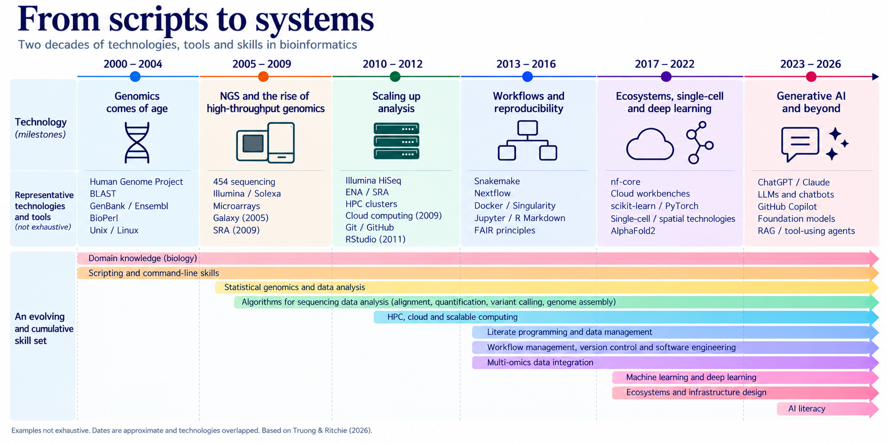

How We Got from Scripts to Systems
The changing skill set of the bioinformatician
Like many bioinformaticians of my generation, I did not train to become one. I trained as a molecular biologist and acquired most of my computational skills while trying to solve actual research problems.
When I started my PhD in 2005, bioinformatics was already an established discipline. Its roots reach back to the first computational analyses of protein sequences in the 1960s (Gauthier et al. 2019). But formal bioinformatics degrees and clearly defined career paths were much less common than they are today. Many of us came from biology, computer science, physics, mathematics or statistics and learned what we needed as we went along.
I came from molecular biology.
During my PhD, I studied microsatellite evolution in yeast in a population genomics lab. I started by using Visual Basic to automate tasks in Excel. When the spreadsheets could no longer hold the data and the statistics became more complex, I moved to R. As the computational side of the project grew further, I learned Perl.
There was no grand plan behind this progression. The problem changed, the limitations of the current approach became apparent, and another skill was added.
Looking back, this seems to me a useful way of thinking about the development of bioinformatics itself.
The field did not move neatly from one set of skills to another. It accumulated them.
First, we had to work out how to analyse the data
The completion of the Human Genome Project and the arrival of next-generation sequencing changed genomics profoundly. Suddenly, very large amounts of sequence data could be generated, and new experimental approaches appeared in rapid succession.
When I joined the CRG in 2009, RNA-seq was still new. Experimental protocols were becoming established, and there was not yet a mature analysis workflow that everyone simply followed.
We still had to work out how to analyse the data.
How should reads be aligned? How should expression be quantified? How should transcript structures be handled? Which differences between samples were biological and which were introduced by the analysis itself?
Today, many of these questions have relatively established solutions. At the time, they were part of an actively developing methodological landscape. New algorithms and software appeared quickly, and understanding what they did—and where they failed—was an important part of being a bioinformatician.
I encountered something similar a few years later at CNAG when I started working with whole-genome bisulfite sequencing within BLUEPRINT. Again, both the experimental technology and the computational methods were developing.
Across bioinformatics, this period saw rapid development of methods for read alignment, assembly, quantification, variant calling and many other analytical tasks.
But as those individual building blocks became more established, the problem began to change.
Knowing how to perform each step was no longer enough.
We also had to make the whole thing run.
From scripts to workflows
A sequencing analysis is rarely one program. Data pass through a chain of tools and transformations before they become something we can interpret biologically.
For a while, scripts, Makefiles and manual commands did a perfectly reasonable job of connecting these steps. Many pipelines—including the ones I worked with—were built this way.
But increasing scale made the limitations increasingly obvious.
What happens when step eight of a twelve-step analysis fails? Can it restart without repeating the first seven? Which software version produced a result? Which parameters were used? Can another person run the same analysis? Can I run it myself six months later?
These sound like engineering questions rather than biological ones. Unfortunately, the biology does not become reliable by ignoring them.
During my time at CRG and CNAG, pipelines therefore became an increasingly important part of the work. GRAPE supported large-scale RNA-seq analysis; later, gemBS provided a structured pipeline for whole-genome bisulfite sequencing.
The pipelines I worked with were still largely implemented using Makefiles and Bash scripts. gemBS was experimentally implemented using CWL for ENCODE, while workflow systems such as Snakemake and Nextflow were emerging and would later become much more widely adopted.
At the same time, other practices were becoming part of the bioinformatics toolbox. Version control made changes to code traceable. Containers helped deal with software dependencies and portability. R Markdown and Jupyter brought code, results and documentation closer together.
The particular technologies matter less than the change they represent.
Once the analytical steps were reasonably established, more attention could be given to how they were connected, executed, reproduced and maintained.
The analysis was becoming part of a larger computational process.
From workflows to systems
At a large sequencing centre such as CNAG, that process extends well beyond the bioinformatics pipeline.
High-throughput sequencing is a production environment. Samples, biobanking, laboratory protocols, metadata, sequencing, computational processing and data delivery all have to fit together. A LIMS connects information across that process. Established laboratory protocols and production pipelines make it possible to handle large numbers of samples consistently.
This introduces another level of thinking.
The question is no longer simply whether an analysis works. It is whether the entire process works repeatedly, reliably and at scale.
I saw the other side of this problem later when I led a bioinformatics core facility at IJC. Instead of joining an established sequencing environment, my team and I had to build many of these structures ourselves, in a smaller environment supporting heterogeneous research projects.
Suddenly, metadata capture, project organisation, computational resources, software maintenance, documentation, training and the delivery of results were all part of the problem.
For methylation-array projects, for example, we developed an environment in which BioForms captured project and sample information, EPipe automated the analysis, computational resources handled the processing, and MethylationDB provided structured access to results.
None of those components alone was the bioinformatics analysis.
The useful system emerged from connecting them.
And that, I think, is one of the less obvious changes in bioinformatics over the last two decades. We still analyse biological data. But increasingly we also build and maintain the systems that allow those analyses to happen reliably.
The skill set accumulated
This is why I find it difficult to describe the evolution of bioinformatics as a succession of technologies or eras.
It is better described as an accumulation.

Biology did not become less important when programming became important. Programming did not disappear when workflow managers arrived. Statistical genomics remains fundamental even as machine learning becomes more common.
Instead, the layers accumulated.
High-throughput sequencing required new algorithms and scalable computing. Increasingly complex analyses brought workflow management, version control and software-engineering practices. Reproducibility connected analysis more closely with documentation and data management. Multi-omics, single-cell and spatial technologies created new integration problems. Machine learning and deep learning added another methodological layer (Truong and Ritchie 2026).
And once all these components started interacting, it became increasingly useful to understand the wider computational ecosystem around them.
That is the important part of the figure: the earlier skills do not stop when the next one appears.
They continue.
So what exactly is a bioinformatician now?
Put all those skills together and we arrive at a slightly absurd job description.
Molecular biologist. Statistician. Programmer. Software engineer. Data engineer. Infrastructure specialist. Machine-learning expert.
Preferably with five years of experience in a technology released three years ago.
The point, of course, is not that every bioinformatician should be all of these things.
As the field has expanded, specialisation has become necessary. Some bioinformaticians work close to biological interpretation and statistical modelling. Others focus on methods development, scientific software, workflow engineering, research data, computational infrastructure or machine learning.
Perhaps the real change is that modern bioinformatics depends on all of these capabilities existing somewhere within the team or organisation.
We do not all need to do everything. But we increasingly need to understand enough about neighbouring areas to work across their boundaries.
Today’s bioinformaticians start somewhere else
The starting point has changed as well.
A student can now enter a bioinformatics degree and encounter molecular biology, programming, algorithms, databases, biostatistics, computational genomics, machine learning and high-performance computing as part of the formal curriculum (Barcelona School of Informatics, Universitat Politècnica de Catalunya 2026).
That is quite different from learning Perl because the problem in front of you has become too large for whatever you were doing before.
It is undoubtedly a better starting point.
But formal training and experience solve somewhat different problems.
Learning programming is different from maintaining software that other people depend on. Learning statistics is different from deciding what to do with a difficult experimental dataset. Learning about workflows is different from debugging one after hundreds of samples have already been processed. Learning the principles of reproducibility is different from trying to reproduce an analysis years later when the software, operating system and people involved have all changed.
Some things are difficult to teach before there is a sufficiently inconvenient real problem attached to them.
And now AI changes the interface again
And now we are adding another layer.
Generative AI is making computational tools considerably easier to access. Code can be generated from natural-language descriptions. Documentation can be queried conversationally. Unfamiliar libraries can be explored quickly. Increasingly, AI systems can connect tools and execute parts of computational workflows.
That will change the skill set again.
But easier execution does not necessarily mean easier judgement.
Is the analysis appropriate for the biological question? Is the generated code correct? Are its assumptions reasonable? Can the result be reproduced and validated? How does the analysis fit into the surrounding computational environment? And what happens when an AI-generated answer looks entirely plausible and is wrong?
Truong and Ritchie (2026) describe the current shift as one in which scientific intent, verification and computational critical thinking become increasingly important. I think that is a useful way of looking at it.
AI may reduce the amount of time bioinformaticians spend writing certain kinds of code. It seems much less likely to reduce the need to understand what the analysis is doing or whether the result makes biological sense.
If anything, lowering the barrier to producing an analysis may make those questions more important.
From scripts to systems
So how did we get from scripts to systems?
Not through one deliberate transition.
New biological technologies created new analytical problems. We developed algorithms to solve them. Increasing scale required pipelines and scalable computing. Repeating those analyses made workflow management and reproducibility important. Running them across organisations brought data management, infrastructure and production processes into the picture.
And each new layer remained connected to the ones underneath it.
That may be why defining the skill set of the bioinformatician has become so difficult. The field sits at a boundary that keeps moving as biology and technology change.
The tools will continue to change.
Understanding the biological problem, knowing enough to judge the analysis, and being able to connect the necessary pieces into something that works may prove rather more durable.